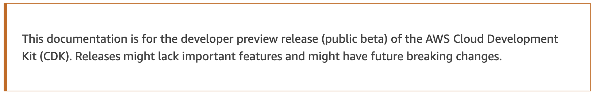
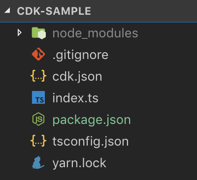
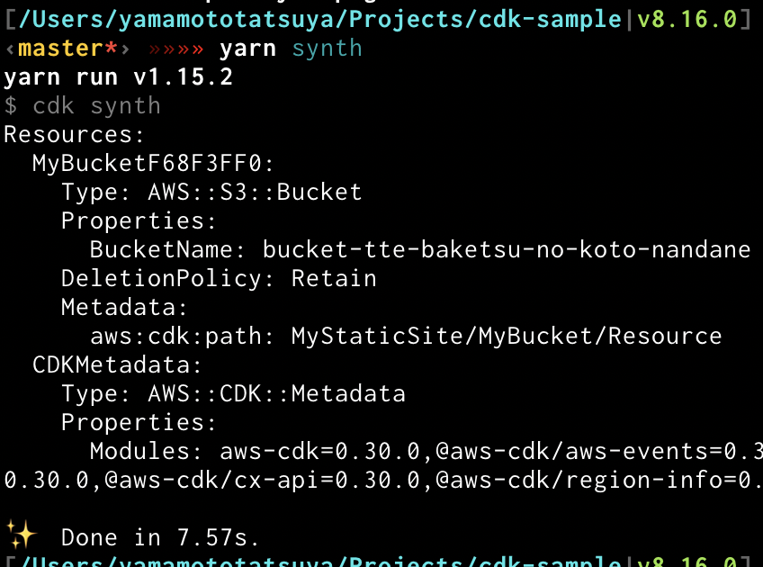
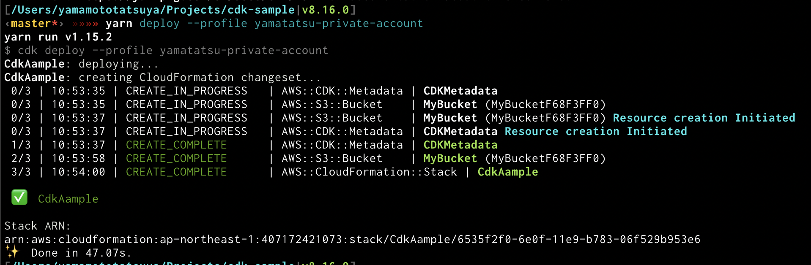
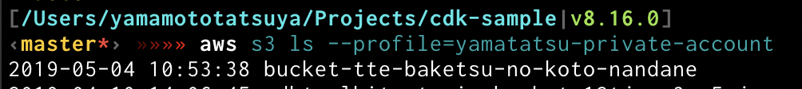
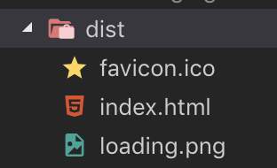

今日話すこと
- AWS CDK とは？
- AWS CDK の書き方
- サンプル
はじめます
AWS CDK とは？
TL;DR
TS を書くと AWS 環境が出来上がる
TS で書ける CFn(Cloud Formation) て感じ
CFn は(あの使いにくい)AWS コンソールをそのままいじっている感じ
CDK はより直感的
TS の型に導かれる

AWS CDK の書き方
最小ファイル構成
package.json
cdk.json
index.ts
cdk synth
cdk deploy
s3 bucket できた
やったね！
サンプル
Static Site


- CureApp
- アプリで医療機器を作ってる
- TS, react, RN, Node.js, MongoDB
おわり。
ご清聴ありがとうございました！！